Collect, review, and process payment requests in a structured way inside Odoo. This module helps finance teams manage incoming requests, track their status, communicate with requesters, store supporting documents, and create vendor bills directly from approved requests.
Payment Request adds a structured workflow for handling payment requests before they become vendor bills. It is especially useful when requesters are not accounting users, when a request does not start from a standard supplier invoice, or when the requester does not know from which company the payment should be made.
Users can submit requests with amount, currency, due date, partner, description, attachments, and payment details. Finance users can then review requests, communicate with the requester, move them through processing stages, and create vendor bills directly from the request record.
The module supports both invoice-based and non-invoice payment requests. When no invoice is available, the requester can provide alternative payment information such as bank card, international bank account, PayPal, Payoneer / Wise, or crypto wallet / Bitcoin details.
A built-in portal interface allows requesters to submit and track their own requests without needing a paid internal Odoo user license.
In standard Odoo flows, vendor bills are typically created directly by finance users or received through email aliases. That works well when the accounting structure is already clear, but it is less convenient when requests come from employees, contractors, vendors, or other requesters who do not know how the bill should be registered.
In many real-life cases, especially in multi-company environments, the requester may not know from which company the payment should be made. They may only know that payment is needed and provide the amount, purpose, attachments, and payout details. The finance team then reviews the request and decides how it should be processed, including the correct company and accounting setup.
This module provides a more flexible pre-accounting workflow than standard bill creation by email alias. It is especially useful when the request is not yet ready to become a vendor bill or when the payout details do not fit a classic supplier invoice flow.
One of the key advantages of this module is that a requester does not need to be a paid internal Odoo user. You can grant portal access to vendors, contractors, employees, or other requesters and let them work with their own payment requests online.
The module improves coordination by automatically subscribing the relevant users to the request. The operation manager becomes a follower on the created request and receives notifications when the request changes. The requester is also subscribed as a follower, which allows them to monitor statuses, read notes and discussion, add comments, and receive messages related to their own request.
The following screens show how the module is configured and used by portal users, operation managers, and finance teams.
Authorized portal users can access the payment request feature directly from their My Account page. A dedicated Payment Requests menu tile gives users a simple entry point to create new requests and track existing ones without needing backend access.
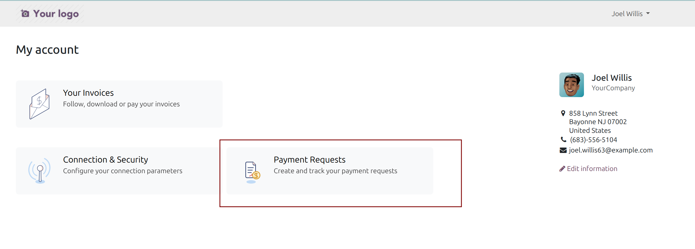
Enable the Payment Requests option on selected portal users to allow access to the payment request feature. This makes it possible to grant request access only to specific external users, while keeping the feature unavailable for other portal users.
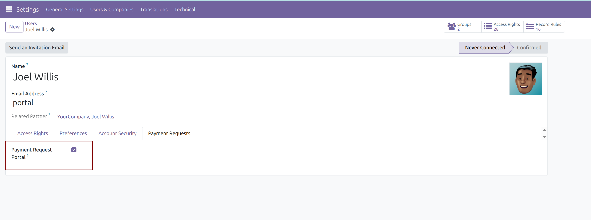
Enable the Operational Manager option on internal users who should automatically follow created payment requests. When a new request is submitted, the operational manager is subscribed as a follower and receives notifications about updates, comments, and status changes.
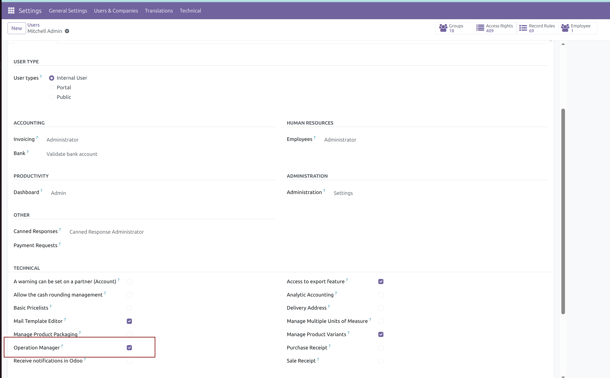
Portal users can create payment requests without needing a paid internal Odoo license. The form allows the requester to provide amount, purpose, attachments, and payout details, including non-standard methods such as Payoneer, Wise, or Bitcoin.
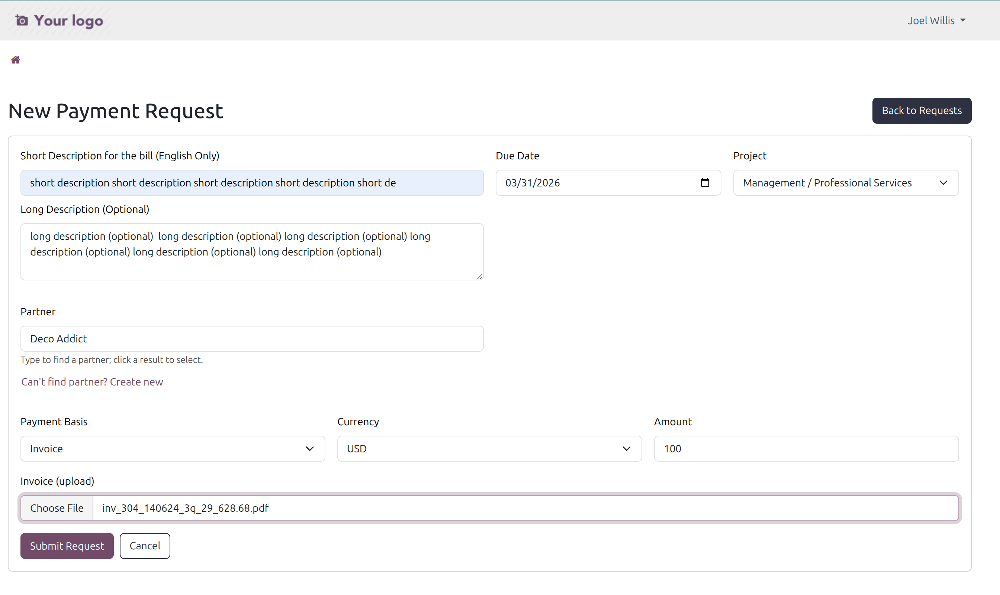
After submission, the requester can view their own payment requests in the portal. This gives them visibility into request progress, current status, notes, discussion history, and related communication without needing to contact the finance team separately.
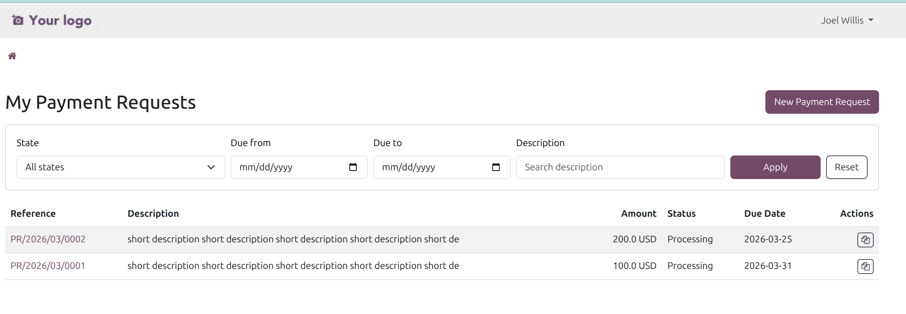
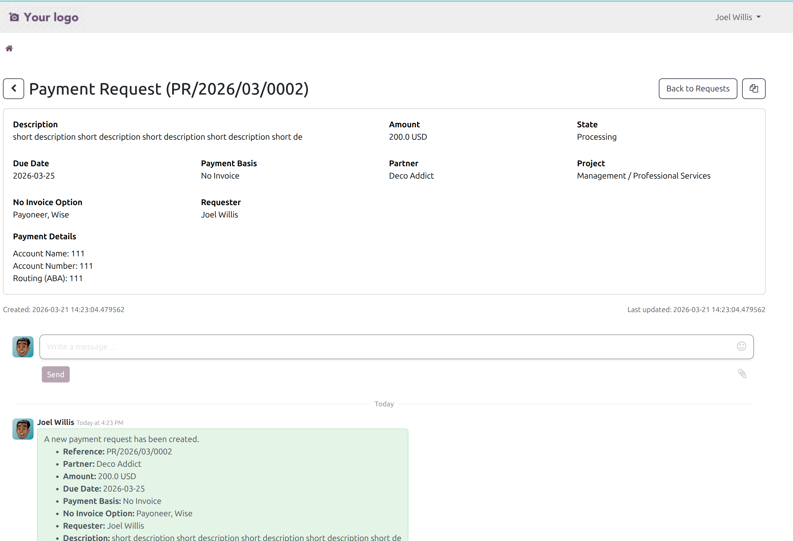
Finance users can manage all payment requests from a dedicated backend list view. This gives accounting and operations teams a centralized workspace to review incoming requests, monitor statuses, and prioritize processing.
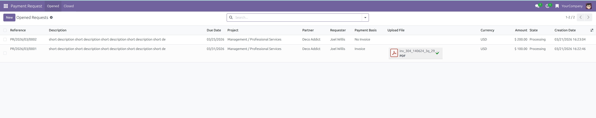
The backend form gives finance users access to all request details, attachments, comments, followers, and communication in one place. It is especially useful in multi-company environments where the requester may not know which company should process the payment.
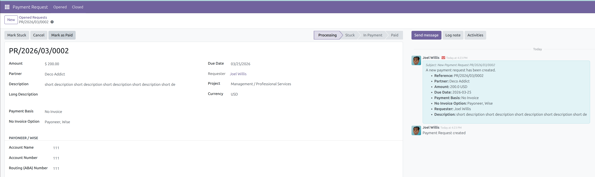
Finance users can create a vendor bill directly from the payment request using a dedicated wizard. At this stage, they can choose the correct company, accounting options, and review flow, which makes the module more flexible than standard bill creation by email alias.
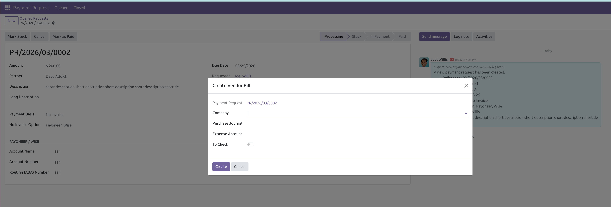
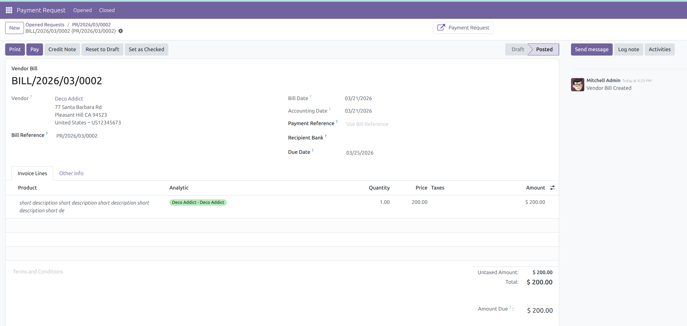
The module includes a dedicated menu for vendor bills marked To Check. This helps finance teams separate bills that still require review and supports a more controlled accounting workflow.
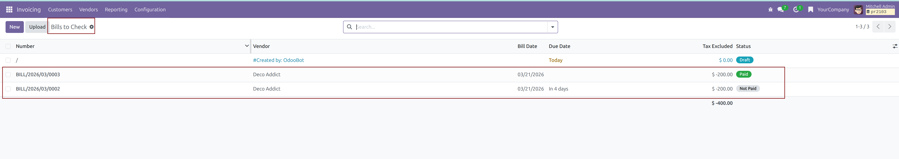
This module is designed for Odoo 18 environments using Accounting, Portal, and Discuss features. Final behavior may depend on your configuration, access rights, and related accounting setup.
Ukraine is still fighting for its freedom, its people, and its right to exist. The war is not over. Every day, Ukrainian defenders continue to hold the line, and every donation helps them do it more effectively.
If this module was useful to you, please consider supporting Ukraine’s defenders. You can donate to trusted Ukrainian initiatives and military support projects here:
Glory to Ukraine. Glory to the defenders.
For questions, customizations, or support, please contact the module author.